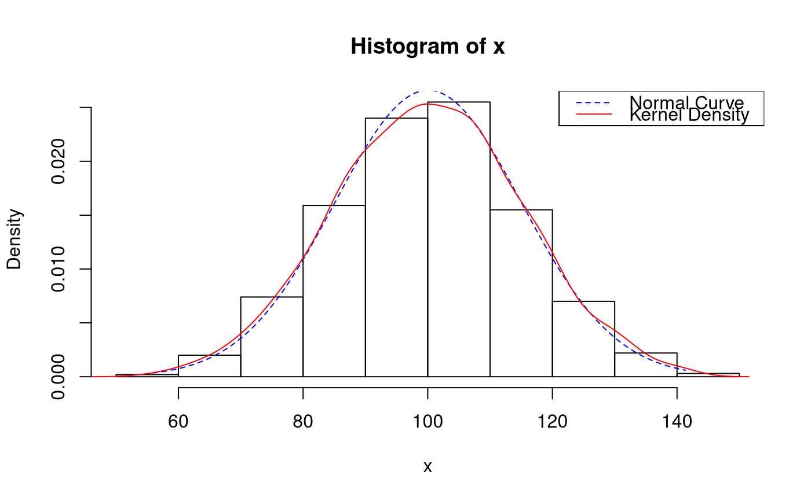

.hist.plot(
x,
breaks = "Sturges",
freq = FALSE,
include.lowest = TRUE,
normalcurve = TRUE,
kernel = TRUE,
legend = TRUE,
right = TRUE,
density = NULL,
angle = 45,
col = NULL,
border = NULL,
main = paste("Histogram of", xname),
ylim = NULL,
xlab = NULL,
ylab = NULL,
axes = TRUE,
plot = TRUE,
labels = FALSE,
warn.unused = TRUE,
...
)
Arguments
| x |
a vector of values for which the histogram is desired. |
| breaks |
one of:
a vector giving the breakpoints between histogram cells, a function to compute the vector of breakpoints, a single number giving the number of cells for the histogram, a character string naming an algorithm to compute the
number of cells (see ‘Details’), a function to compute the number of cells. In the last three cases the number is a suggestion only; as the
breakpoints will be set to pretty values, the number
is limited to 1e6 (with a warning if it was larger). If
breaks is a function, the x vector is supplied to it
as the only argument (and the number of breaks is only limited by
the amount of available memory). |
| freq |
logical; if TRUE, the histogram graphic is a
representation of frequencies, the counts component of
the result; if FALSE, probability densities, component
density, are plotted (so that the histogram has a total area
of one). Defaults to TRUE if and only if breaks are
equidistant (and probability is not specified). |
| include.lowest |
logical; if TRUE, an x[i] equal to
the breaks value will be included in the first (or last, for
right = FALSE) bar. This will be ignored (with a warning)
unless breaks is a vector. |
| normalcurve |
Logical.
Add normal curve. |
| kernel |
Logical.
Add kernel density plot.
This only works if freq = FALSE. |
| legend |
Logical.
Add legend. |
| right |
logical; if TRUE, the histogram cells are
right-closed (left open) intervals. |
| density |
the density of shading lines, in lines per inch.
The default value of NULL means that no shading lines
are drawn. Non-positive values of density also inhibit the
drawing of shading lines. |
| angle |
the slope of shading lines, given as an angle in
degrees (counter-clockwise). |
| col |
a colour to be used to fill the bars.
The default of NULL yields unfilled bars. |
| border |
the color of the border around the bars. The default
is to use the standard foreground color. |
| main |
main title and axis labels: these arguments to
title() get “smart” defaults here, e.g., the default
ylab is "Frequency" iff freq is true. |
| ylim |
the range of x and y values with sensible defaults.
Note that xlim is not used to define the histogram (breaks),
but only for plotting (when plot = TRUE). |
| xlab |
main title and axis labels: these arguments to
title() get “smart” defaults here, e.g., the default
ylab is "Frequency" iff freq is true. |
| ylab |
main title and axis labels: these arguments to
title() get “smart” defaults here, e.g., the default
ylab is "Frequency" iff freq is true. |
| axes |
logical. If TRUE (default), axes are draw if the
plot is drawn. |
| plot |
logical. If TRUE (default), a histogram is
plotted, otherwise a list of breaks and counts is returned. In the
latter case, a warning is used if (typically graphical) arguments
are specified that only apply to the plot = TRUE case. |
| labels |
logical or character string. Additionally draw labels on top
of bars, if not FALSE; see plot.histogram. |
| warn.unused |
logical. If plot = FALSE and
warn.unused = TRUE, a warning will be issued when graphical
parameters are passed to hist.default(). |
| ... |
further arguments and graphical parameters passed to
plot.histogram and thence to title and
axis (if plot = TRUE). |
Examples
